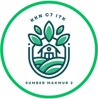

Sumber Makmur

Pare ( Momordica charantia )
Peria , paria , atau pare adalah tumbuhan merambat yang berasal dari wilayah Asia Tropis, terutama daerah India bagian barat, yaitu Assam dan Burma.Anggota suku labu-labuan atau Cucurbitaceae ini biasa dibudidayakan untuk dimanfaatkan sebagai sayuran maupun bahan pengobatan.Nama Momordica yang melekat pada nama binomialnya berarti "gigitan" yang menunjukkan pemerian tepi daunnya yang bergerigi menyerupai bekas gigitan.Fakta Menarik Pare
Menangkal Radikal Bebas
Mengonsumsi seporsi pare akan memenuhi 54 persen kebutuhan tubuh akan vitamin C. Manfaat pare adalahVitamin C yang terkandung di dalam pare akan meningkatkan kemampuan tubuh untuk menangkal radikal bebas. Manfaat pare bisa mengurangi resiko kanker kulit dan kerusakan sel.Membuat Kulit Sehat dan Cantik
Manfaat pare vitamin-vitamin yang terkandung di dalam pare dapat membantu kulit dalam pemulihan dari penyakit seperti eczema dan psoriasis. Manfaat pare selain itu pare juga memiliki kemampuan untuk memurnikan darah, menjadikan kulit bebas toksin. Inilah kunci kulit yang sehat bercahaya dan bebas jerawat.Mengendalikan Gula Darah
Pare memiliki sifat yang berfungsi seperti insulin, yang membantu membawa glukosa ke dalam sel untuk energi. Manfaat pare bisa membantu menurunkan gula darah. Konsumsi pare dapat membantu sel-sel kamu mendapatkan glukosa sebagai makanan. Manfaat pare juga mampu mencegah penumpukkan glukosa dalam darah dan memindahkannya ke hati, otot, dan jaringan lemak.Menjaga Kesehatan Mata
Pare mengandung senyawa flavonoid, seperti ?-karoten, ?-karoten, lutein, dan zeaxanthin yang bisa membantu meningkatkan kesehatan mata Anda. Kandungan lain pada pare juga dapat mencegah katarak dan glaukoma yang disebabkan oleh komplikasi diabetes.Berkat kandungan nutrisi ini, pare dapat meningkatkan fungsi penglihatan terutama masalah penglihatan di malam hari akibat rabun senja serta memperlambat degenerasi makula.
Meredakan Asma dan Gangguan Pernafasan Lainya
Kandungan pare mampu mencegah penyakit pernapasan umum, seperti batuk, flu, atau pilek. Dalam pengobatan tradisional Tiongkok, jus dari buah pare juga digunakan untuk mengobati kondisi pernapasan tertentu, seperti batuk kering, bronkitis, dan asma selama ratusan tahun.Pare memiliki sifat antihistamin, anti-inflamasi, dan antivirus yang membuat pare menjadi makanan tambahan yang ideal dalam menjaga kesehatan pernapasan.